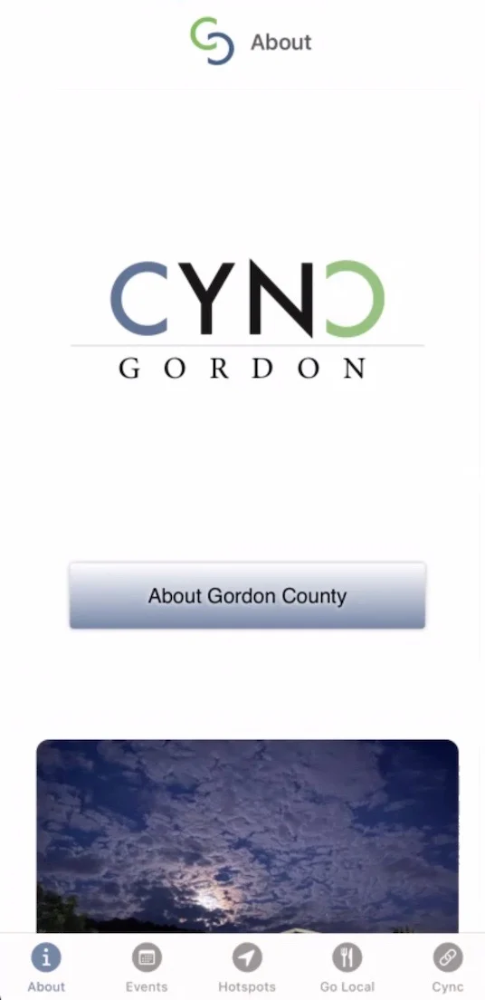

Cync
A local discovery app for Gordon County, Georgia
In our 10-person study, participants had trouble telling Events and Community Hotspots apart. I worked as a UX designer and developer on the three-person capstone team.
Explore the research findings- My role
- UX Designer & Developer
- Team
- Kathryn, Natasha & Belle
- Research
- 10-person study
- Context
- University of Georgia, 2022
Events and Hotspots were hard to tell apart


Navigation
Finding
Events and Community Hotspots were hard to tell apart. Some content and labels overlapped.
Proposed response
Revisit the categories, combine overlapping content, and reconsider the order of the tabs.
Icon visibility
Finding
Some participants had trouble seeing the calendar, map, and link icons.
Proposed response
Increase icon size and strengthen contrast between the menu and surrounding imagery.
Readability
Finding
Titles and descriptions were hard to scan in parts of the app.
Proposed response
Add space between titles and descriptions and clarify their hierarchy.
The research report lists these as proposals. It does not document a follow-up test.
Helping residents find what’s nearby.
Cync explored a shared source of local information for Gordon County, Georgia. Residents could find events, dining, community hotspots, and resources through an iOS app.
The project connected three audiences: residents looking for things to do, business owners seeking local visibility, and the Chamber of Commerce sharing community information. The research asked whether the app was useful and whether people could navigate it.
My part in the team.
I worked with Natasha Busie and Belle Jones. The project archive identifies my role as UX Designer and Developer; our research plan sets out the responsibilities below.
- Development & website UX
- Advanced development and UX website design were my assigned areas in the project plan.
- Interviews & data collection
- I was listed as an interviewer with Natasha, and a data collector with Belle.
- Shared project work
- Natasha and Belle contributed research, interface design, branding, and development across the capstone.
A study around everyday tasks.
The published report covers 10 participants across residents, business owners, and Chamber members. The research plan proposed interviews, pre- and post-task surveys, and think-aloud sessions with the app or prototype.
Tasks in the research plan
- Find an upcoming event and read its details.
- Add an event to a calendar.
- Map a route to a local place.
- Find somewhere to eat.
These tasks gave the team a way to examine how people moved between information, directions, and actions. The report identified issues with categories, icon visibility, and content hierarchy.
What the project produced.
The capstone archive contains an app concept, a design system, a research plan, and a user-testing report. The study gave the team specific categories and controls to reconsider.
A scope decision
Testers wanted to see other people’s ratings and reviews. The team described shared interaction as unlikely within the project timeframe.
A next step
A follow-up study could test the revised categories, icon visibility, and content spacing against the same tasks. The archive does not establish a measured improvement after revision.
Explore the project archive
- Original capstone website (opens in a new tab)
- User-testing report (PDF) (opens in a new tab)
- Research plan (PDF) (opens in a new tab)
- Design system (PDF) (opens in a new tab)
Cync team: Kathryn Patterson, Natasha Busie, and Belle Jones. Original app imagery and research belong to the project team.